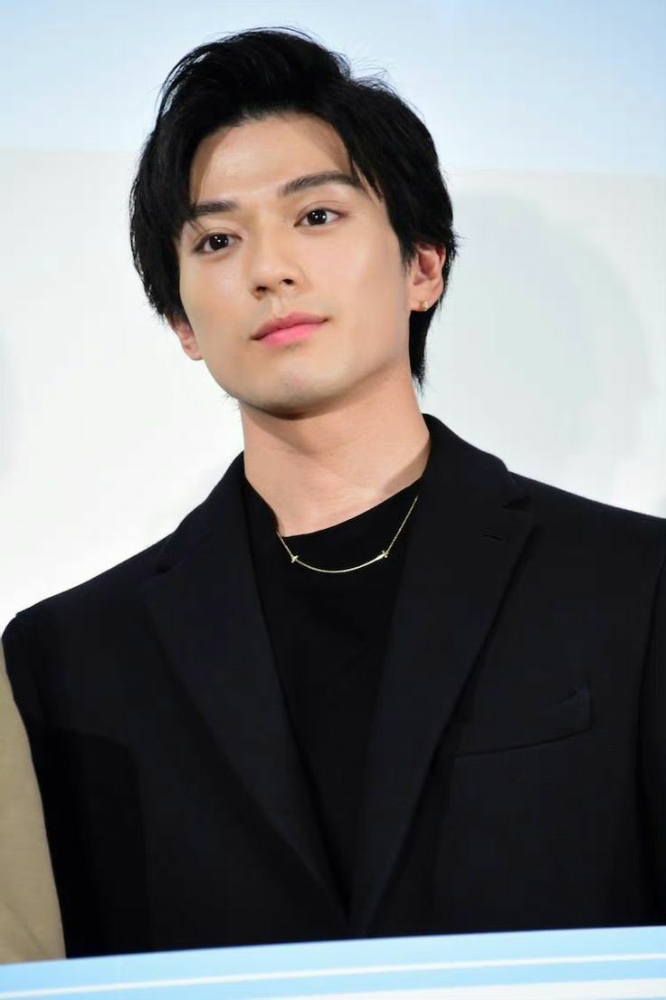
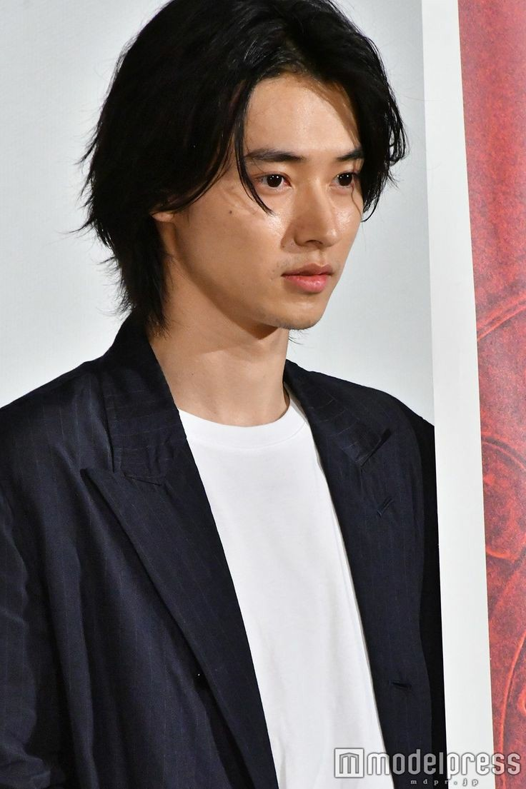
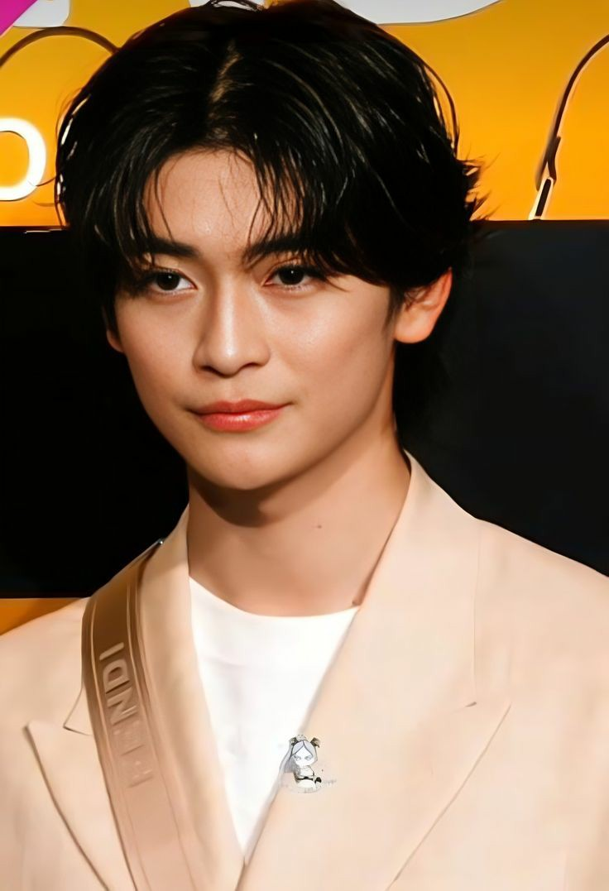

ーーー ACTOR ーーー
1. MACKENYU ARATA
Mackenyu Arata adalah pemeran Jepang yang lahir pada 16 November 1996 di Little Tokyo, Los Angeles, California, Amerika Serikat. Ia adalah putra dari pemeran, produser, sutradara, dan seniman beladiri Jepang Sonny Chiba. Ia aktif di dunia industri sejak tahun 2005 hingga sekarang. Ia bukan sosok baru di dunia akting, sebab ia sudah mengawali karier di bidang tersebut sejak masih anak-anak dengan membintangi serial TV Jepang, Team Astro (2005). Sementara debut Hollywood diawali dengan terlibat dalam film Pacific Rim: Uprising pada 2018. Mackenyu sendiri sebelum menjadi Zoro juga kerap dipercaya untuk membintangi beberapa live action dari anime-anime populer, lho. Mulai dari JoJo’s Bizarre Adventure, Tokyo Ghoul S, Peach Girl, Rurouni Kenshin, Fullmetal Alchemist hingga yang terbaru Knights of Zodiac. Selain itu, Mackenyu pernah meraih peringkat tiga dalam kompetisi US Kyokushin Karate saat masih SMP. Kemudian, begitu lulus SMA, ia juga aktif di berbagai bidang olahraga, seperti gymnastic, polo air, dan angkat beban. Ia bahkan memiliki bakat di bidang musik, Mackenyu disebut-sebut menguasai alat musik seperti piano, saxophone, dan flute.
2. KENTO YAMAZAKI
Kento Yamazaki adalah seorang aktor dan model berkebangsaan Jepang yang lahir pada 7 September 1994 di Itabashi, Tokyo, Jepang. Sebagai penggemar berat sepak bola, ia memainkan olahraga tersebut dari kelas 2 hingga tahun ke-3 di sekolah menengah. Ia juga memiliki cita-cita menjadi pemain sepak bola atau pelatih tim nasional. Ia debut pada 2010 dan berada di bawah agensi Stardust Promotion. Kento Yamazaki pertama kali menerima tawaran masuk agensi Takeshita Dori saat duduk di bangku kelas 3 SMP. Ia debut melalui serial Atami no Sousakan (2010).Pada tahun yang sama, ia juga membintangi serial Clone Baby (2010) sebagai seorang hacker. Sementara itu, debutnya di film layar lebar dilakukan melalui Control Tower (2011).Sejak awal debut hingga saat ini, Kento kerap dipercaya menjadi pemain utama di sejumlah serial dan film layar lebar Jepang. Deretan serial terkenal yang ia bintangi adalah Death Note (2015), Good Doctor (2018), hingga Alice in Borderland (2020).Film terbaru yang ia bintangi pada tahun 2022 ini adalah Kingdom 2: To the Far Land. Ia juga dikabarkan akan comeback melalui Alice in Borderland 2. Debut sejak 12 tahun lalu, Kento Yamakazi sudah membintangi cukup banyak judul film dan serial.
3. FUMIYA TAKAHASHI
Fumiya Takahashi adalah pemeran Jepang yang lahir pada 12 Maret 2001 di Kasukabe, Saitama, Jepang. Dia adalah seorang aktor yang dikenal dengan Our Secret Diary (2023), Kamen Rider Zero-One (2019), dan Kamen Rider Saber + Kikai Sentai Zenkaiger: Super Hero Senki (2021). Fumiya Takahashi adalah aktor muda yang sedang naik daun terutama dalam dunia akting di Jepang. Takahashi berada di bawah naungan agensi A-Plus dan memulai kariernya setelah memenangkan kompetisi Mr. DK Contest mewakili sekolahnya. Ia berhasil menang dan muncul di majalah Popteen. Awalnya, Takahashi tidak berniat menjadi seorang aktor melainkan bermimpi menjadi seorang koki, Takahashi mulai debut dalam dunia hiburan sebagai model di Popteen sementara debut pertamanya di dunia akting adalah sebagai Auto Hiden di Kamen Rider Zero One pada tahun 2019, Ia adalah juru masak dengan pengalaman yang cukup banyak, terutama masakan Prancis dan bahkan mendapat lisensi koki, Takahashi mempunyai hobi memasak karena keinginannya untuk memberi kebahagiaan pada ibunya saat berulang tahun. Dia diterima oleh produser saat audisi karena dia sebenarnya tidak dapat membuat lelucon yang bagus, tetapi dia sanggup mengubah ekspresinya agar sesuai dengan tipikal komedian.